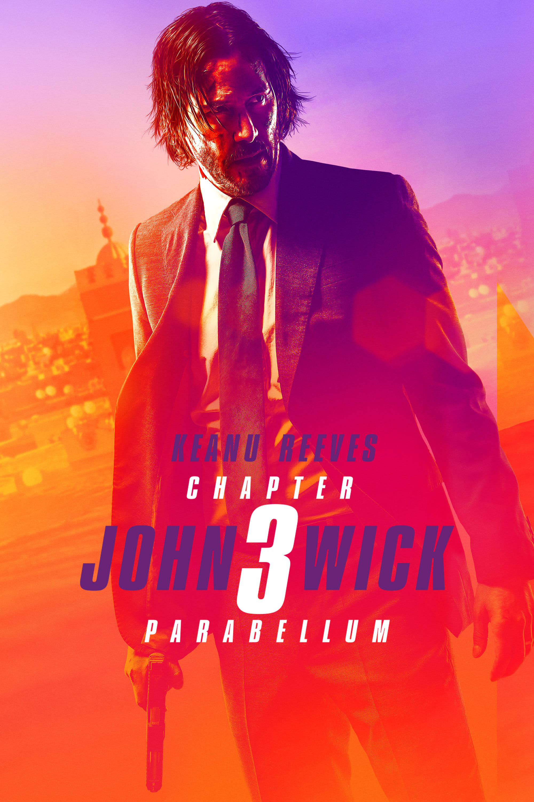

Red Notice
Skor : 6.4
Genre : Action
Durasi : 118 menit
Film Red Notice ini mengisahkan sebuah perampokan yang mempertemukan tiga tokoh utama dalam film. Mereka adalah John Hartley (Dwayne Johnson), seorang profiler top FBI, si penipu ulung Nolan Booth (Ryan Reynolds), dan Sarah Black (Gal Gadot) yang dijuluki The Bishop. Ketika Interpol mengeluarkan surat perintah kepada John Hartley, untuk berburu dan menangkap orang yang paling dicari di dunia yakni Sarah Black seorang buronan kelas kakap yang selalu mencuri sebuah karya seni mahal dunia

John Wick : Chapter 3 Parrabelum
Skor : 7.4
Genre : Action
Durasi : 131 menit
John wick 3 melanjutkan kejadian di film sebelumnya. Karena telah membunuh bos mafia Santonio D'Antonio di Continental new york hotel, ia pun dianggap melanggar peraturan dunia hitam dan diburu pembunuh bayaran. Sebelum ini terjadi, john wick telah menitipkan anjingnya kepada petugas hotel, Charon. John wick yang terluka parah setelah bertempur dengan pembunuh, mencari pengobatan pada seorang dokter. Belum selesai diobati, ia kembali diburu berbagai anggota geng. Tapi john wick berhasil menghabisi mereka.